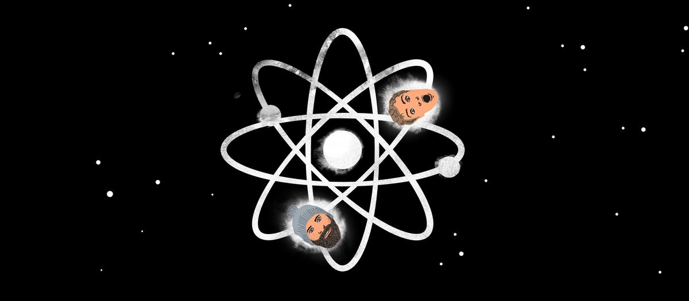
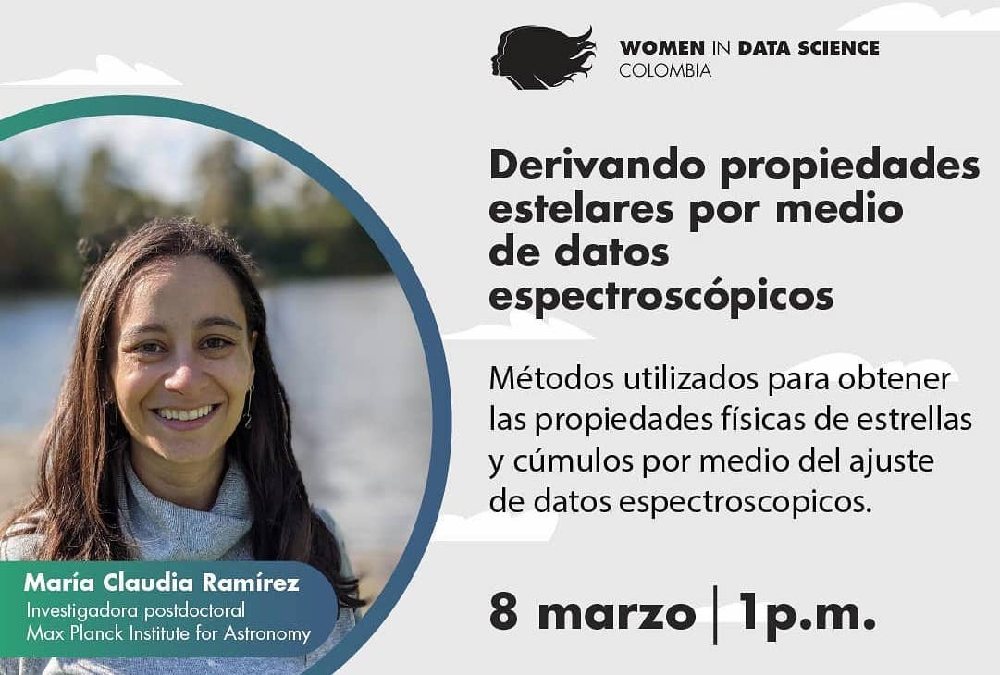
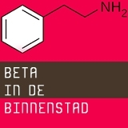

Science Unscripted "What was it like when the Earth formed?"
I had the
pleasure to chat with Conor Dillon and Gabriel Borrudabout XUE1 and the implications of our
results for rocky planet formation.(listen
to podcast).
I am committed to bring my knowledge and passion for
astronomy to society. I regularly give outreach talks and collaborate with the press to write about
my scientific output and my career path. I am also passionate about inspiring young generations to
pursue a career in science. Most of the outreach I do is targeted to my home country Colombia, so
most of the content in this page is in Spanish.
For a full list of press releases and news about my research you can go to Planet Formation in Extreme
Environments (XUE) or to The Outcome of Massive
Star Formation
Videos
Fuerza Latina is a project from the Deutsche Welle that aims to exalt the work of Latin American women in several areas. I was invited to participate in a conversation with other Latin American astronomers and space scientists about what it is like to be an astronomer.
I participated in several events to commemorate the launch of JWST. You can watch the videos here:
-
"MPIA goes Webb"
You can see the whole playlist here -
ACDA
(my contribution starts at 1:03:30) -
Planetario de Bogotá
(my contribution starts at 34:55)
Here are some other recorded talks about my research:
-
Ciencia en bicicleta
I was invited to give a talk about my work on massive stars and planet formation in extreme environments at Ciencia en Bicicleta, an initiative from the Planetario de Medellín and Parque Explora.
-
Origenes Seminar
I was invited to give a talk about young massive stars and their efect on proto-planetary disks at the seminar Origenes from the Astronomy Department of Antioquia Univeristy in Colombia.
-

Global WiDS conference
I was invited to participate in the Colombian regional event of the global Women in Data Science (WiDS) conference. I gave a talk about "Deriving stellar properties through spectroscopic data"
-
The Colombian Association of Astronomical Studies (ACDA) invited me to talk about my research on "Young massive stars and their effect on planet formation" where give an overview about the outcome of massive star formation and talk about how we will be able to study the effect of these stars on planet-forming disks.
-
Hablemos del Universo
Together with my friend and colleague Camilo Peñaloza from the University of St. Andrews we talked about the origin and evolution of stars at Hablemos del Universo (let's talk about the Universe), a space created by the Planetarium of Bogotá, Colombia.
Podcasts
Contra TIC Impacto TIC is a news agency specialized on technology, innovation and science. As a special series of podcasts about women in science they invited me to talk about my career and our upcoming observations with JWST.
All things considered
"So far so good for the James Webb Space Telescope
after its long-awaited launch"
I was interviewed by Joe Palca with
the occasion of JWST's launch (listen to interview).
Shots de Ciencia
I was invited to participate in the podcast Shots de
ciencia to talk about massive stars and their
importance in the Universe.
Press releases
You can find a full list of press releases and news about my research in the project pages. Go to Planet Formation in Extreme Environments (XUE) or to The Outcome of Massive Star Formation.
2024-01-04: We made it to the front page of El Espectador:
Señales para otra Tierra
2023-11-06: Check out this beautiful article by Kate LaRue in the New York Times about
JWST and featuring our results: A
Beginner’s Guide to Looking at the Universe.
2022-02-27: I am very happy to share this Forbes
Science article
by Andrew Wight about my
research and
scientific career.
2020-01-20: Our paper about the formation of massive binaries was covered by MPIA's press
office and in the Anton Pannekoek Institute's website.
2017-02-17: Here is a press
release (in Dutch) about our paper about the lack of close binaries amongst the Massive
young stars in M17. Our result was also featured in
iflscience.com .
Teaching
Clubes de Ciencia Colombia
In July 2019 I had the opportunity to participate as an
instructor in
Clubes de Ciencia in
Bucaramanga, Colombia.
Together with my friend and colleague Juliana Sandoval we designed a one-week workshop
called El supermercado
Galáctico
(the Galactic supermarket), where we developed
several activities to familiarize high school students with the concepts spectroscopy
and stellar classification.

Beta in the City
Together with my PhD supervisor, Lex
Kaper.
We gave a public talk called "Are stars
born with a companion or single?" as part of the event Beta in de Binnenstad, a
discussion platform
organized by SPUI25 in the city center
of Amsterdam, where scientist
from different disciplines talk to students and the public about their research topics.